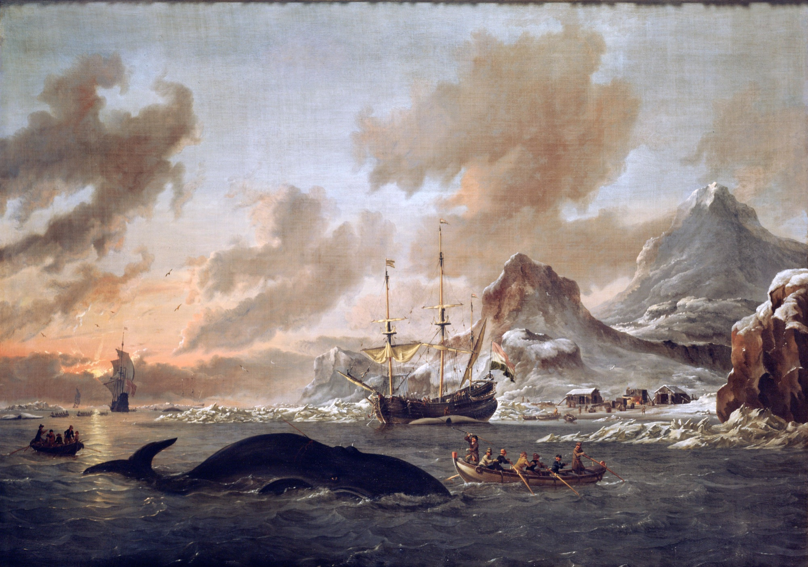

Disclaimer: The opinions expressed here are mine alone and never reflect any policy, strategy, or opinion of any client or employer — past, present, or future.
The Future of Agencies
The Agency Industrial Complex, 2035
By 2035 my job won't exist — and neither, I suspect, will the agencies I've worked at. A forecast of how artificial intelligence, holding-company collapse and procurement break the agency model apart, and what the survivors become.

Select any passage to highlight it or attach a note — saved on your device. Sourced claims are linked.
By 2035, my job won't exist. In fact, none of the jobs I've ever had will exist. I doubt any of the agencies I've worked at will either.
AI ate the junior layer. The work that used to train the next generation — research, first drafts, exploratory layouts, performance creative variants — got absorbed by tools that didn't exist three years ago.1 The pyramid that produced every senior person in this industry stopped recruiting at the bottom.
The bottom of the pyramid is closing
US entry-level marketing job postings, indexed to January 2023 = 100
Source: industry job-posting data via Ad Age / eMarketer, 2025. Endpoints shown; line illustrative.
The holdcos have merged. Storied agencies, shuttered. Symptoms of structural collapse being financialized.2
The largest media buying tools in the world now route around agencies by default.3
Procurement won. Transparency tools dissolved the media cross-subsidy that propped up creative for thirty years.4 Average CMO tenure has slipped to about four years and keeps falling — too short to be the single buyer the agency industrial complex relied on.5
The shortest seat in the C-suite
Average executive tenure, years
Source: Spencer Stuart tenure studies, 2023–25. CMO ≈ 4.1 years and trending down.
These forces don't just shrink the industry. They polarize it. The middle has no defensible position when the work is either too cheap to bill hours for or too high-stakes to bill anything but performance.
Hedge funds and endowments
Creative agencies will become the marketer's hedge funds.
There will be more of them. Each will be smaller, with very senior people. Craftspeople. They will be AI-powered. Meaning, there will be little to no entry-level work.
Each will be specialized by creative output — Super Bowl ad, creator campaign, OOH, experiential, etc.
Creative agencies will be hired to deliver high-impact but rare home runs. They should not be fired for their failures. But they will be.
They will be paid with a small retainer plus a performance bonus.
One marketer may work with several creative agencies at once (including an in-house option for Fortune 100 companies) — spreading their bets and smoothing variance across them.
There will be no mid-sized creative agencies.
Media agencies will become the marketer's endowments.
There will be fewer of them. Each will be bigger — mechanized — with mid-level people overseeing the AI and managing edge-case scenarios. Engineers. Again, no entry-level work.
Media agencies will be hired to deliver low-impact, proven outcomes. Their job is to ensure the client's business survives forever, come hell or high water.
They will be paid via a small subscription fee, like an index fund's low expense ratio.
One marketer will only work with one media agency — concentrating their spend to achieve scale across all channels.
There will be no mid-sized media agencies.
| CreativeThe hedge fund | MediaThe endowment | |
|---|---|---|
| Number & size | More of them; small, boutique craftshops | Fewer of them; big, mechanized utilities |
| The people | Very senior craftspeople, AI-powered | Mid-level engineers overseeing the AI |
| The mandate | High-impact, rare home runs | Low-impact, proven outcomes — survive forever |
| How they're paid | Small retainer + performance bonus | Small subscription, like an index fund's expense ratio |
| The marketer | Several at once — spread the bets | One — concentrate the spend |
| Reports to | The CEO — a bet on the brand | The CFO — it's capital allocation |
| The middle | No mid-sized agencies survive in either column | |
Holdcos will be gone — (re)split back into creative and media agencies, detangling the mismatches between size, business models, and client expectations. The dream of creative-media integration will finally be put to rest, failed.
The CMO's role will be greatly diminished. Creative agencies will report to the CEO — it's a bet on the direction of the brand. Media agencies will report to the CFO — it is simply capital allocation, after all.
Smaller businesses (sub-Fortune 100) won't hire either creative or media agencies at all. No retainer or subscription fee would justify it. These businesses will ideate, create, and activate directly within the social platforms, which will each have their own self-serve suite of AI tools.3
Agencies will no longer be at the glamorous center of the agency industrial complex — they will be functional middleware between marketers and platforms, a luxury only the biggest businesses can afford.
The whale-oil era
By 2045, the final survivors retire. The need for creative and media persists, but the agency industrial complex will be remembered akin to the whale oil business — once essential, but ultimately a temporary solution in history.
Even the successful hedge funds and endowments will become obsolete.
Replaced by what, I'm unsure.
Further reading & sources
A forecast, not reporting — but every premise is anchored in something already happening. Grouped by claim.